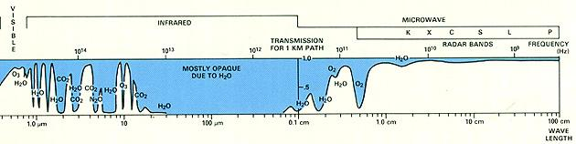
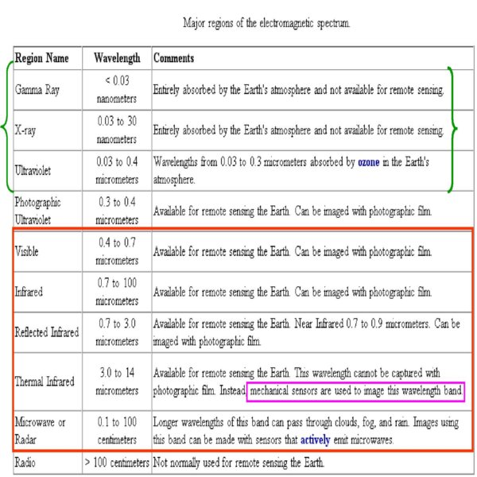

The first requirement for remote sensing is to have an energy source to illuminate the target. This energy is in the form of electromagnetic radiation. Understanding the characteristics of electromagnetic radiation in terms of their wavelength and frequency is crucial to understanding the information to be extracted from remote sensing data. Electromagnetic radiation (EMR) extends over a wide range of energies and wavelengths (frequencies) from the shorter wavelengths (including gamma and x-rays) to the longer wavelengths (including microwaves and broadcast radio waves). There are several regions of the electromagnetic spectrum which are useful for remote sensing.
The distribution of the continuum of all radiant energies can be plotted either as a function of wavelength or of frequency in a chart known as the Electromagnetic (EM) Spectrum


The light which our eyes - our "remote sensors" - can detect is part of the visible spectrum. The visible wavelengths cover a range from approximately 0.4 to 0.7 μm. The longest visible wavelength is red and the shortest is violet (Violet: 0.4 - 0.446 μm; Blue: 0.446 - 0.500 μm; Green: 0.500 - 0.578 μm Yellow: 0.578 - 0.592 μm; Orange: 0.592 - 0.620 μm; Red: 0.620 - 0.7 μm)
The next portion of the spectrum of interest is the infrared (IR) region which covers the wavelength range from approximately 0.7 μm to 100 μm - more than 100 times as wide as the visible portion! The infrared region can be divided into two categories based on their radiation properties - the reflected IR, and the emitted or thermal IR. The reflected IR covers wavelengths from approximately 0.7 μm to 3.0 μm. The thermal IR region is quite different than the visible and reflected IR portions, as this energy is essentially the radiation that is emitted from the Earth's surface in the form of heat. The thermal IR covers wavelengths from approximately 3.0 μm to 100 μm.
The microwave region is from about 1 mm to 1 m. This covers the longest wavelengths used for remote sensing.
Most remote sensing is conducted above the Earth either within or above the atmosphere. The gases in the atmosphere interact with solar irradiation and with radiation from the Earth's surface. The atmosphere itself is excited by EMR so as to become another source of released photons. Here is a generalized diagram showing relative atmospheric radiation transmission of different wavelengths. Blue zones (absorption bands) mark minimal passage of incoming and/or outgoing radiation, whereas, white areas (transmission peaks) denote atmospheric windows, in which the radiation doesn't interact much with air molecules and hence, isn't absorbed.
 


Q1.Which wave below has the longest wavelength?
Ultra violet waves
Radio waves
X-rays
Infrared waves
Q2. Of the waves of the Visible spectrum which color has the longest wavelength?
Green
Orange
Voilet
Red
Q3. Which wave below has the shortest wavelength?
Visible Light
Gamma Waves
Microwaves
Ultravoilet Waves
Q4.The higher the frequency the higher the energy of the wave
True
False

Procedure for the experiment is as follows. ___________________________________________________________________________________________________________________________________________